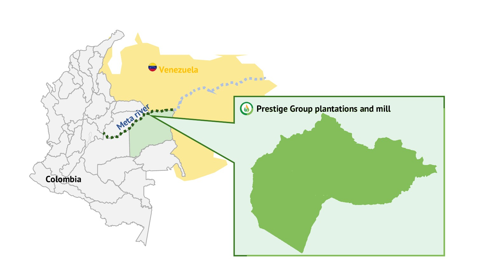
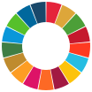

Una de las últimas fronteras agrícolas del planetaOne of the planet's last agricultural frontiers
Vichada: una región inmensa, degradada y sin explotar, donde se puede desarrollar agricultura sin talar bosque ni desplazar la vida silvestre.Vichada: a vast, degraded and untapped region, where agriculture can be developed without clearing forest or displacing wildlife.
Aquí no hay bosque que talarThere is no forest to clear here
La Altillanura es una sabana natural, no una selva. Sus suelos ácidos y pobres en nutrientes hicieron que nunca creciera bosque. Por eso desarrollar agricultura aquí no cuesta lo que cuesta en otras partes del mundo.The Altillanura is a natural savanna, not a rainforest. Its acidic, nutrient-poor soils meant forest never grew here. That is why developing agriculture in this region does not carry the cost it does elsewhere in the world.
Cero deforestaciónZero deforestation
No talamos bosque porque no lo hay. La palma incluso captura más carbono que la sabana que reemplaza.We clear no forest because there is none. Palm actually captures more carbon than the savanna it replaces.
Sin desplazar la vida silvestreNo wildlife displaced
Sembramos sobre pastizales degradados, no sobre hábitats de fauna ni sobre suelos que sean sumideros de carbono.We plant on degraded grasslands, not on wildlife habitat or on land that acts as a carbon sink.
Escala poco comúnRare scale
La Altillanura tiene 13,5 millones de hectáreas y una frontera agrícola de cerca de 6,9 millones (Fedesarrollo). Muy pocos lugares en el mundo ofrecen esto.The Altillanura holds 13.5 million hectares, with an agricultural frontier of nearly 6.9 million (Fedesarrollo). Very few places on Earth offer this.
Mientras la demanda mundial de alimentos y combustibles sigue creciendo, este tipo de tierra, donde la agricultura puede crecer sin costo ambiental, es cada vez más escaso. Desarrollar el Vichada de forma responsable es una oportunidad urgente, para la región y para el mundo.As global demand for food and fuel keeps rising, this kind of land, where agriculture can grow at no environmental cost, is becoming ever scarcer. Developing Vichada responsibly is an urgent opportunity, for the region and for the world.
En el corazón de la Orinoquía colombianaIn the heart of Colombia's Orinoquía
Prestige Group está en el municipio de La Primavera, en el oriente del Vichada, sobre el corredor fluvial que conecta la región con los puertos del Atlántico.Prestige Group operates in the municipality of La Primavera, in eastern Vichada, along the river corridor that connects the region to Atlantic ports.

Por qué estamos aquíWhy we are here
Vichada es el departamento con mayor pobreza multidimensional de Colombia. Pocos privados se le miden a este contexto. Nosotros sí, porque el empleo formal y la infraestructura le cambian la vida a la gente.Vichada is the department with the highest multidimensional poverty in Colombia. Few private players take on this context. We do, because formal employment and infrastructure change lives.

Aporte globalGlobal contributionObjetivos de Desarrollo Sostenible que impulsamosUN Sustainable Development Goals we advance
Nuestro trabajo en el Vichada contribuye directamente a varios de los Objetivos de Desarrollo Sostenible de las Naciones Unidas.Our work in Vichada contributes directly to several of the United Nations Sustainable Development Goals.